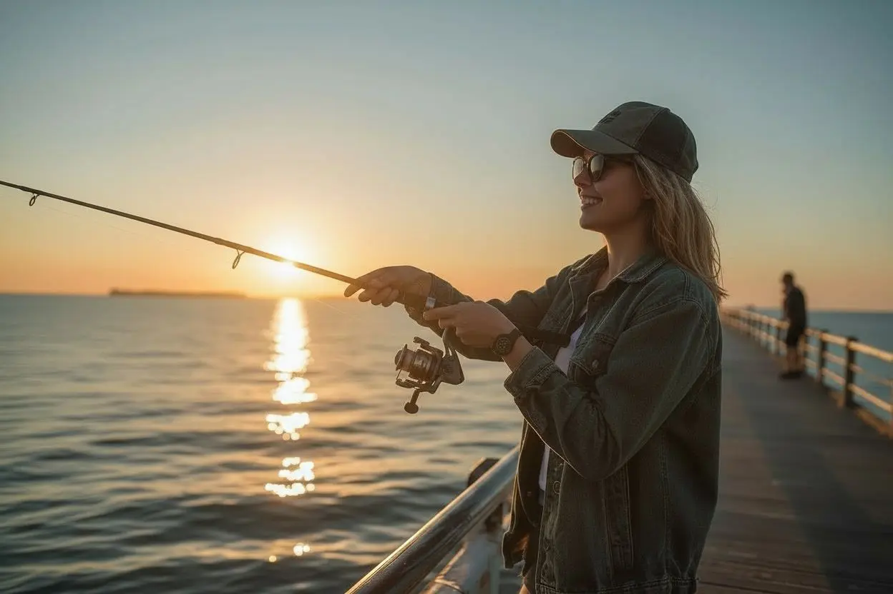

LRF Nedir ve Neden Bu Kadar Eğlenceli?
LRF (Light Rock Fishing), hafif ekipmanlarla kayalık ve taşlık kıyılarda küçük ve orta boy balıkları avlamaya dayanan bir olta balıkçılığı dalıdır. Japonya'dan dünyaya yayılan bu stil, hem yeni başlayanlar hem de deneyimli balıkçılar için son derece keyiflidir. Ekipman maliyeti düşük, öğrenme eğrisi kısa ve her yaşa uygundur.
Uygun Bütçe
4000-6000 TL ile eksiksiz bir başlangıç seti kurulabilir. Her bütçeye uygun çözümler mevcuttur.
Hızlı Öğrenme
Temel teknikleri birkaç seansta kavrayabilirsin. Pratik yaparak ve aksiyon mühendisliğini çözerek hızla gelişirsin.
Her Kıyıda Geçerli
Türkiye'nin tüm sahillerinde, liman içlerinde, kayalıklarda ve taşlık meralarda sıfır riskle uygulanabilir.
Her Yaşa Uygun
Çocuktan yetişkine herkes keyifle yapabilir. Hafif ve narin takım yapısı sayesinde yorgunluk hissetmezsiniz.
Ekipmanını Hazırla
İlk adım, setini doğru bir şekilde bir araya getirmektir. Makine kamışa takılır, misina makaraya sarılır ve shock leader bağlanır. Bu işlemleri bir kez öğrenince her seferinde 5 dakikada tamamlarsın.
- Makineyi kamışın makine yatağına (reel seat) sıkıca tak ve kilitle.
- PE örgü misinayı makaraya en az 100-150 metre sar, eşit ve sıkı olmasına dikkat et.
- Misina ucuna 1-1,5 metre florokarbon shock leader bağla (FG veya Albright düğümü).
- Shock leader ucuna snap kilit bağla, maket değişimini kolaylaştırır.
Temel Düğümleri Öğren
Balıkçılıkta en sık yaşanan hayal kırıklığı kopan misinalardır. Doğru düğüm bilmek, hem maketini hem de balığını kaybetmeni önler. İki temel düğüm yeterlidir.
- Uni Düğümü: Snap kilidi ve lider bağlamak için en pratik düğüm. 5 dakikada öğrenilir.
- FG Düğümü: PE misina ile florkarbon lideri birleştirmek için en güçlü yöntem.
- Her düğümü bağladıktan sonra ıslatıp yavaşça sıkıştır — sürtünme ısısı misina zayıflatır.
- Düğüm bağlamayı evde pratik yap; sahilde aceleyle bağlanan düğümler kopar.

İlk Atışını Yap
Ekipman hazır, düğümler tamam — şimdi sıra sahile çıkmaya geldi. İlk seferinde sonuç beklemek yerine tekniği hissetmeye odaklan. Her atış seni bir adım daha ileriye taşır.
- Sakin ve sığ bir kıyı seç — iskele kenarı veya taşlık sahil idealdir.
- 2-3 gram jig head + 2 inç soft plastik maket ile başla.
- Maketi dibe bırak, yavaşça çek ve dur. Stop & Go tekniği en etkili başlangıç yöntemidir.
- Misina gerginliğini hisset — vurma anında sert bir çekiş hissedeceksin.
Sık Sorulan Sorular
Yeni başlayan LRF avcılarının en kapsamlı LRF topluluğunda merak ettiği temel sorular and kurumsal cevapları.
Türkiye genelinde denizlerde amatör (hobi amaçlı) olta balıkçılığı yapmak için T.C. vatandaşlarına herhangi bir resmî lisans, belge veya izin alma zorunluluğu yoktur. Gidip herhangi bir liman içinde, taşlık sahilde veya kayalık meralarda takımını kurup sıfır hata riskli and özgürce LRF avcılığı yapabilirsin. Sadece iç sular (göller and akarsular) için dönem and bölge yasaklarına pür dikkat dikkat etmen yeterlidir.
LRF balıkçılığında predatör balıkların kıyıya en çok yanaştığı and mikro sahtelere hunharca atladığı o en büyüleyici zaman dilimi gün batımı (Sunset) ile gece yarısı arasındaki saatlerdir. Özellikle liman içlerindeki projektör and sokak lambalarının su yüzeyine vurduğu o parıl parlayan ışık gölgeleri, meraların en trofe noktalarıdır. Mevsimsel olarak ise eylül, ekim and kasım ayları kıyıların en hareketli and balık popülasyonunun nirvanaya ulaştığı şanlı başlangıç dönemleridir.
LRF'nin en büyük lüksü, ağır and hantal yem kovaları, devasa kurşun yığınları and sehpalar barındırmadığı için tüy gibi hafif olmasıdır! Takımını sırt çantana atıp sahile indiğinde 1.5 - 2 saatlik mikro mikro at-çek seansları bile sana muazzam keyifli trofeler and inanılmaz bir deşarj hazzı yaşatmaya fazlasıyla yeterlidir. Uzun and yorucu bekleyişler ebediyen felç edilmiştir valla!
Sahilde bir meraya indin and yarım saattir vuruş alamıyorsan zerre canını sıkma, LRF avcısı durağan durmaz! Hemen aksiyon mühendisliğini and taktiğini değiştir: Mikro jig head ağırlığını hafiflet (örneğin 2 gramdan 1.2 grama düş), soft plastik yeminin rengini and kokulu silikon varyantını değiştir and en önemlisi kayalıkların, iskelet ayaklarının tam diplerine and sığ gölgelere doğru narin narin süzül! LRF dinamik bir meraları arama sanatıdır, balık elbet o iştah kabartan mikro aksiyona saniyede teslim olacaktır valla!
Kayıtsız şartsız EVET, hatta bu bizim bu platformda en çok aşılayacağımız o en asil predatör balıkçılık kültürüdür: **"Catch & Release" (Yakala ve Sal!)** LRF takımlarında kullanılan mikro iğneler balığın ağız dokusuna kaba and derin hücre hasarları sızdırmaz. Yakaladığın o narin balıkları, limit altı yavruları and trofe dışı meraları narin bir balıkçı pensesiyle incitmeden iğneden söküp, suya yavaşça geri bıraktığında o balığın kuyruk sallayarak okyanusa süzülme hazzı sana milyar kat daha büyük bir usta vizyonu hazzı verecektir!
Türkiye meralarında LRF disipliniyle dört mevsim av bereketi taş gibi akmaktadır! İlkbahar and yaz aylarında iskele diplerinde, taş aralarında narin mırmırlar, predatör iskorpitler and sığ sularda hırçın hanoslar safari şov yaparken; sonbahar and kışın o şanlı soğuk sularında ise su üstünde çılgınlar gibi koşan predatör istavritler, dişli lüfer familyası, narin mırmırlar ve o koca gövdeli iri levrekler mikro sahtelerinin tam şah damarına atlar! Her mevsimin trofe karakteri bambaşkadır!
Artık Tamamen Hazırsın!
Teknik İpuçları ile başarı şansını artır. Uzmanlık Rehberi ile akademiye hazırlan.